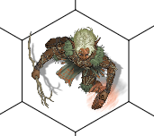
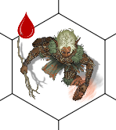

Objeto SceneGraphicItem
Objeto SceneGraphicItem
O Objeto GraphicItem representa um único item gráfico no Scene, como, por exemplo, um token.
Herança
O objeto SceneGraphicItem herda de SceneBaseObject e possui também todas as suas características.
Abstração
Esta é uma classe abstrata e você nunca encontrará um objeto SceneGraphicItem vivo sem ser uma das seguintes classes:
Por ser uma abstração, um objeto SceneGraphicItem possui todas as características que são comuns aos objetos listados acima.
Características
Além das características herdadas, o objeto SceneGraphicItem também possui as seguintes características:
Propriedades e atributos
| Propriedade | Tipo | Descrição |
|---|---|---|
| scene | Objeto Scene | (Somente Leitura) Contém o Objeto Scene a qual este item gráfico pertence. |
| objectType | String: "token" "effectArea" "userDrawing" | (Somente Leitura) Contém um texto que identifica o tipo do objeto gráfico e pode conter um dos seguintes valores: "token" - este item gráfico é um Objeto SceneToken "effectArea" - este item gráfico é um Objeto SceneEffectArea "userDrawing" - este item gráfico é um Objeto SceneUserDrawing |
| width | Double | Contem a LARGURA do item em métrica de mundo. |
| height | Double | Contem a ALTURA do item em métrica de mundo. |
| layer | Enumerado: "background" "objects" "tokens" | Define em qual camada do tabuleiro este item se encontra. |
| x | Double | Contém, em métrica de mundo, a posição do item no eixo X. |
| y | Double | Contém, em métrica de mundo, a posição do item no eixo Y. |
| z | Double | Contém um número para definir a ordem Z do item, isto é, a ordem em que o item é desenhado na tela. Exemplo: Se A e B forem dois items de uma mesma camada do scene e se A possuir ordem Z equivalente a 5 e B possuir ordem Z equivalente a 10, o item A aparecerá abaixo do item B na tela. |
| rotation | Double | Contém um ângulo em graus que define a rotação do item na interface. |
| visible | Boolean | Se for true, o item deve ser desenhado para todos. Se for false, o item deve ser desenhado apenas para o mestre. |
| snapToGrid | Boolean | Define como o item deve se posicionar em relação ao grid. Se for true, o item deve se ajeitar para se encaixar na grid do tabuleiro. Se for false, o item não deve tentar ajeitar sua posição de forma automática. |
| locked | Boolean | Se true, os usuários não conseguirão mover o item pelo scene. Ótimo para, após o tabuleiro tiver sido montado pelo mestre, evitar que os usuários movam peças sem querer e desmontarem o scene. |
| selected | Boolean | Indica se o item está contido na lista de itens selecionados do usuário atual. |
| isHover | Boolean | Indica se o mouse do usuário está em cima do item. |
| isMine | Boolean | (Somente Leitura) Contém true se o usuário atual do RRPG puder controlar/for dono do item. |
| ownerUserID | String | Contém o login do usuário do RRPG que é dono deste item. |
| canBeRendered | Boolean | (Somente Leitura) Contém true se o item pode ser renderizado na tela do usuário. O valor desta propriedade considera o Fog of War do tabuleiro. |
| canvas | Objeto SceneCanvas | (Somente Leitura) Contém o objeto SceneCanvas do item. Este objeto contém as operações gráficas que compõe a aparência do item; Se for um SceneToken, por exemplo, você encontrará um item dentro de canvas que é responsável por desenhar a imagem no tabuleiro. Se for um SceneUserDrawing, dentro de canvas você encontrará as informações do desenho que o usuário fez. |
Métodos
| Método | Descrição |
|---|---|
| item:getCenter([snapToGrid]) | Retorna onde no mundo do tabuleiro fica o centro do item. Parâmetros: (OPCIONAL) snapToGrid - Booleano. Se True, o scene retornará a posição mais perto do centro do item que se encaixe na grid. False, o scene não tentará fazer nenhum tipo de arredondamento. Se este parâmetro não for informado, o scene usará o valor da propriedade "snapToGrid" do item como parâmetro. Retorno: A função retorna dois números na seguinte ordem: worldX - A posição central no eixo X em relação ao tabuleiro, em métrica de mundo. worldY - A posição central no eixo Y em relação ao tabuleiro, em métrica de mundo. Exemplo: local wX, wY = scene.items[1]:getCenter(); |
| item:setCenter(worldX, worldY[, snapToGrid]) | Move o item de forma que seu centro ocupe a posição passada como parâmetro. Parâmetros: worldX - Posição no eixo X do tabuleiro, em métrica de mundo, onde o centro do item deve ficar. worldY - Posição no eixo Y do tabuleiro, em métrica de mundo, onde o centro do item deve ficar. (OPCIONAL) snapToGrid - Booleano. Caso seja True, o Scene tentará arredondar a posição de forma que o item se encaixe no grid do tabuleiro. Se não informado, o scene utiliza o valor da propriedade "snapToGrid" do próprio item. |
| item:getBounds() | Retorna as informações dos limites do item no scene. Esta função retorna 5 valores na seguinte ordem: left - Valor numérico em métrica de mundo contendo o valor da propriedade "x" do item. top - Valor numérico em métrica de mundo contendo o valor da propriedade "y" do item. right - Valor numérico em métrica de mundo contendo o valor da propriedade "x + width" do item. bottom - Valor numérico em métrica de mundo contendo o valor da propriedade "y + height" do item. rotation - Valor numérico contendo o valor da propriedade "rotation" do item. |
| item:setBounds(left, top, right, bottom[, rotation]) | Altera os limites do item no scene. Parâmetros left - Valor numérico em métrica de mundo contendo o valor da propriedade "x" do item. top - Valor numérico em métrica de mundo contendo o valor da propriedade "y" do item. right - Valor numérico em métrica de mundo contendo o valor da propriedade "x + width" do item. bottom - Valor numérico em métrica de mundo contendo o valor da propriedade "y + height" do item. (OPCIONAL) rotation - Valor numérico contendo o valor da propriedade "rotation" do item. |
| item:getCellsOccupied() | Retorna as células do grid que o item está ocupando no momento. Parâmetros: Não há Retorno: Um array (tabela lua indexada de 1 a #tabela) de tabelas luas, cada uma contendo as propriedades "i"e "j" das coordenadas Aij de cada célula ocupada pelo item. |
| item:compareZOrder(otherItem) | Realiza uma comparação de ordem Z entre dois graphics itens e retorna a ordem em relação aos dois. Parâmetros: otherItem - Outro objeto SceneGraphicItem com o qual deseja comparar Retorno: -1 se item fica abaixo de otherItem 0 se item fica exatamente na mesma ordem z 1 se item fica acima de otherItem |
| item:doSnapToGrid() | Ajusta a posição atual do item para que fique agarrado ao grid. |
| item:delete() | Remove o item do tabuleiro. |
Eventos
| Nome do evento | Descrição |
|---|---|
| onBeforeDraw | Evento de renderização. Quando estiver neste evento, utilize os métodos de renderização do viewport para realizar pinturas na tela do usuário. Não realize tarefas pesadas neste evento! Este evento é chamado antes do RRPG desenhar o item gráfico na tela. |
| onAfterDraw | Evento de renderização. Quando estiver neste evento, utilize os métodos de renderização do viewport para realizar pinturas na tela do usuário. Não realize tarefas pesadas neste evento! Este evento é chamado depois do RRPG desenhar o item gráfico na tela. |
| onBoundsChange | Evento que é chamado quando os limites do item for alterado (posição, largura, altura, rotação, etc..) Parâmetros: item - objeto SceneGraphicItem que sofreu a alteração nos limites. |
Exemplos
Exemplo 1 - Um plugin que movimenta de forma simples os itens do Scene com o mouse
| require("scene.lua"); SceneLib.registerPlugin( function (scene, attachment) -- Variáveis para armazenar informações sobre o "arrastar" dos itens local objMouseDown = nil; -- Qual objeto está sendo arrastado local selecaoX, selecaoY; -- Em que ponto do item o usuário clicou (em relação ao centro do item) -- Manipular o evento onMouseUp do Viewport afim de detectar o click do mouse * scene.viewport.onMouseDown = function(event) -- Converter para métrica de mundo a posição do clique local wx, wy = scene.viewport:screenToWorld(event.x, event.y); -- Descobrir qual item se encontra neste ponto objMouseDown = scene.items:itemAtPoint(wx, wy); if objMouseDown ~= nil then -- Existe um item nesta posição. * -- Vamos obter onde fica a posição central deste item local centerX, centerY = objMouseDown:getCenter(); if objMouseDown.snapToGrid then -- Movimento "agarrado" ao grid * -- Vamos pegar a posição do mundo e arredondar para o centro -- de uma célula mais próxima local cellI, cellJ = scene.grid:worldToCell(wx, wy); wx, wy = scene.grid:cellToWorld(cellI, cellJ); end; -- calcular onde no item o usuário clicou, em relação ao seu centro. selecaoX = wx - centerX; selecaoY = wy - centerY; end; end; -- Manipular o evento onMouseMove para arrastar o item scene.viewport.onMouseMove = function(event) if objMouseDown ~= nil then -- Mouse moveu e existe um item selecionado -- Converter a posição clicada para métrica de mundo local wx, wy = scene.viewport:screenToWorld(event.x, event.y); if objMouseDown.snapToGrid then -- Movimento agarrado ao grid -- Arredondar a posição do mouse para o centro de uma célula mais -- próxima. local newCellI, newCellJ = scene.grid:worldToCell(wx, wy); wx, wy = scene.grid:cellToWorld(newCellI, newCellJ); end; -- Calcular o novo centro do item local centerX, centerY = objMouseDown:getCenter(); centerX = wx - selecaoX; centerY = wy - selecaoY; -- Setar o novo centro do item. objMouseDown:setCenter(centerX, centerY); end; end; -- Manipular o evento onMouseUp para parar de arrastar o item scene.viewport.onMouseUp = function(event) -- Mouse liberou o click, vamos -- sinalizar para o onMouseMove que não estamos mais arrastando -- ninguem objMouseDown = nil; end; end*); |
|---|
Exemplo 2 - Um plug-in que adiciona/remove uma marca personalizada quando o usuário clica nos itens do scene.
| require("scene.lua"); SceneLib.registerPlugin( function (scene, attachment) -- Manipular o evento OnMouseDown do Viewport scene.viewport.onMouseDown = function(event) -- Usuário clicou no Scene -- Transformar as coordenadas de tela em métrica de mundo local worldX, worldY = scene.viewport:screenToWorld(event.x, event.y); -- Localizar o item que o usuário clicou local item = scene.items:itemAtPoint(worldX, worldY); if item ~= nil then -- Encontrou um item na posição clicada. * local NOME_MINHA_MARCA = "MarcaExemplo"; -- Localizar uma operação gráfica neste item com o nosso nome local opGrafica = item.canvas:findByName(NOME_MINHA_MARCA); if opGrafica == nil then --[[ A operação gráfica da minha marca ainda não existe neste token/item. Vamos criar ]] opGrafica = item.canvas:addBitmap(); opGrafica.name = NOME_MINHA_MARCA; -- Abaixo, URL da imagem da nossa marca. opGrafica.url = "https://wiki.teamfortress.com/w/images/d/dd/Bleed_drop.png?t=20110425044341"; opGrafica.x = 0.25; opGrafica.width = 0.3; opGrafica.y = -0.1; opGrafica.height = 0.3; opGrafica.z = 10; else -- Vamos apagar nossa operação gráfica previamente criada opGrafica:delete(); end; end; end; end*); |
|---|
|  Item sem a marca |  Item com a marca |
|---|---|
Created with the Personal Edition of HelpNDoc: Protect Your Confidential PDFs with These Simple Security Measures